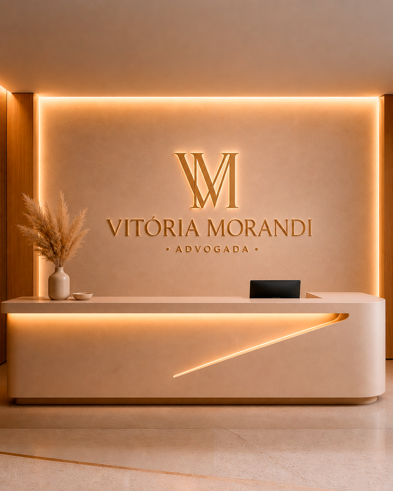
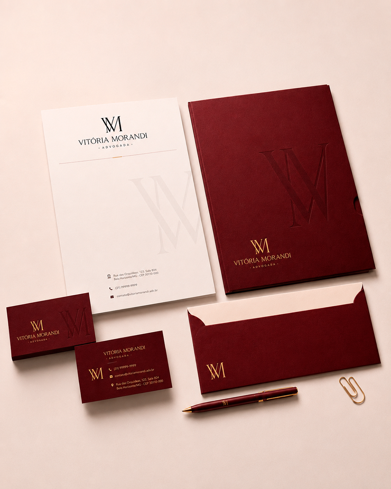

Conceito da Marca
A identidade visual foi desenvolvida para representar uma atuação firme, refinada e memorável, unindo sofisticação, confiança e autoridade em uma assinatura visual atemporal.

Sofisticação visual, credibilidade institucional e presença marcante traduzidas em uma identidade atemporal.
A identidade visual foi desenvolvida para representar uma atuação firme, refinada e memorável, unindo sofisticação, confiança e autoridade em uma assinatura visual atemporal.

Versão principal da identidade visual, composta pelo monograma VM com o nome abaixo. Deve ser priorizada em materiais institucionais e aplicações de destaque.

Versão horizontal com o monograma VM ao lado do nome. Indicada para espaços horizontais e aplicações com restrição de altura.

Versão composta somente pelo nome. Ideal para assinaturas visuais, materiais editoriais e aplicações mais discretas.

Versão reduzida contendo apenas o monograma VM. Recomendada para ícones, favicons, selos, marcas d'água e redes sociais.
Utilizada nos títulos e elementos de destaque da identidade visual. Sua elegância e personalidade reforçam o posicionamento sofisticado, exclusivo e atemporal da marca.
Utilizada em textos de apoio, informações institucionais e conteúdos complementares. Sua alta legibilidade garante clareza, equilíbrio e profissionalismo na comunicação.





Mantenha sempre um espaço livre ao redor da marca para preservar sua legibilidade, equilíbrio visual e destaque em qualquer aplicação.

Utilize apenas as cores oficiais da identidade visual para garantir consistência, reconhecimento e fortalecimento da marca.

Evite alterar proporções, esticar ou comprimir a marca. A integridade visual deve ser preservada em todas as aplicações.

Evite sombras, brilhos, contornos ou quaisquer efeitos que descaracterizem a identidade visual original da marca.